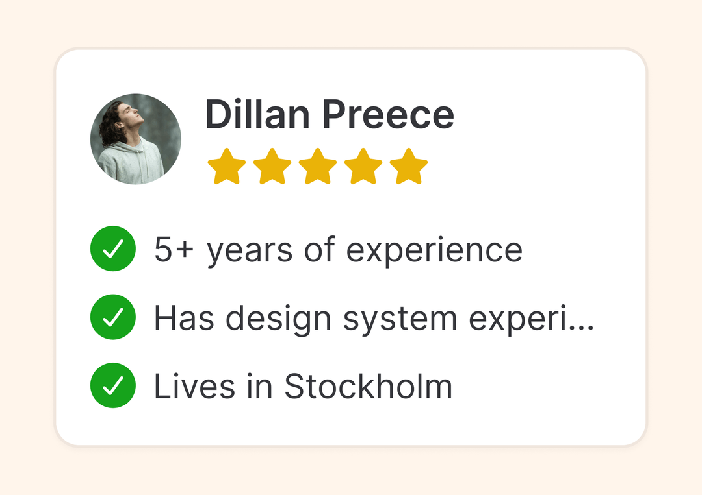
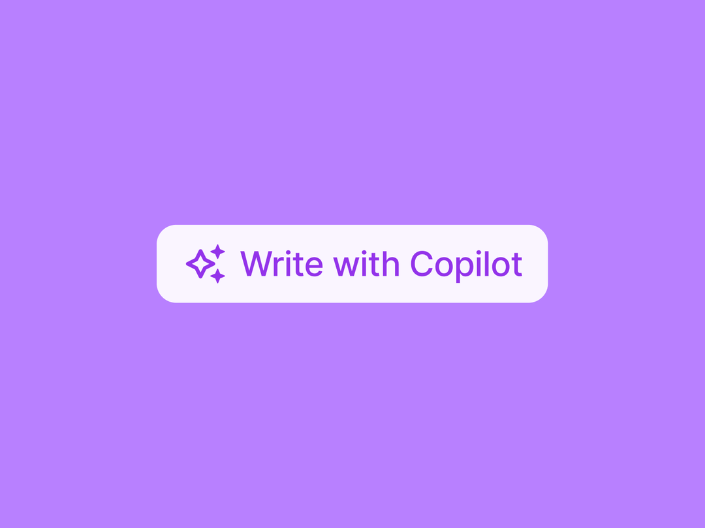
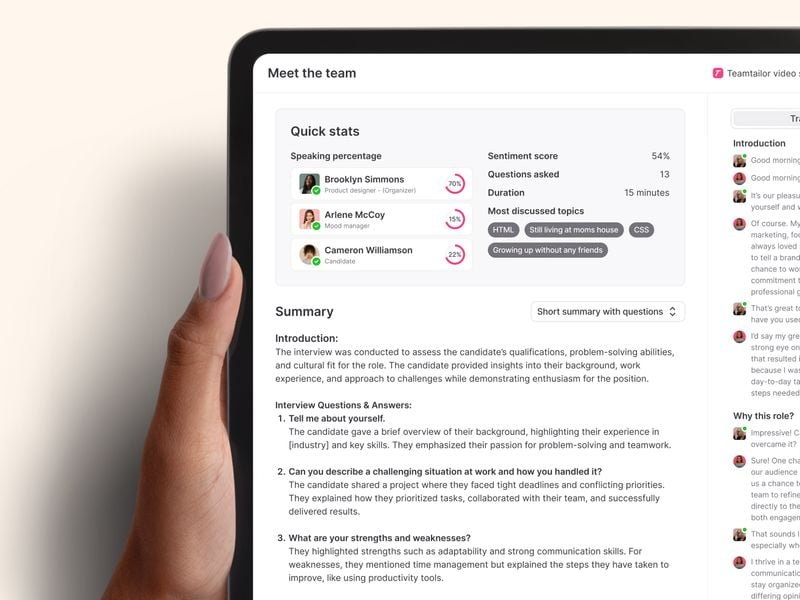
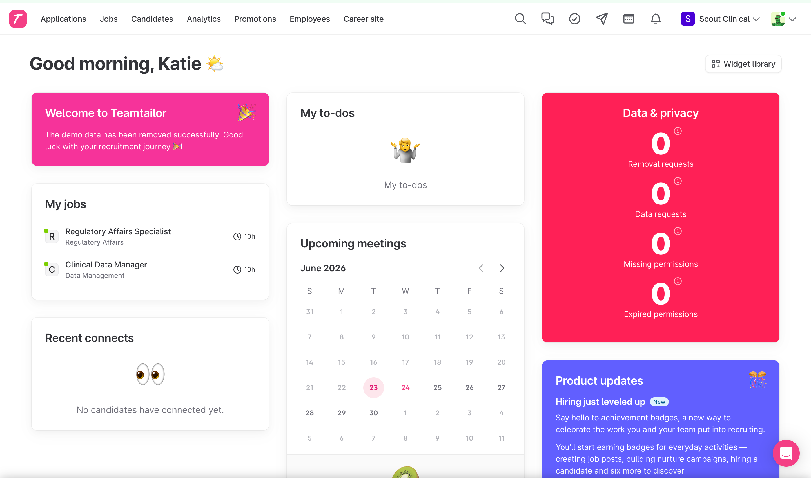
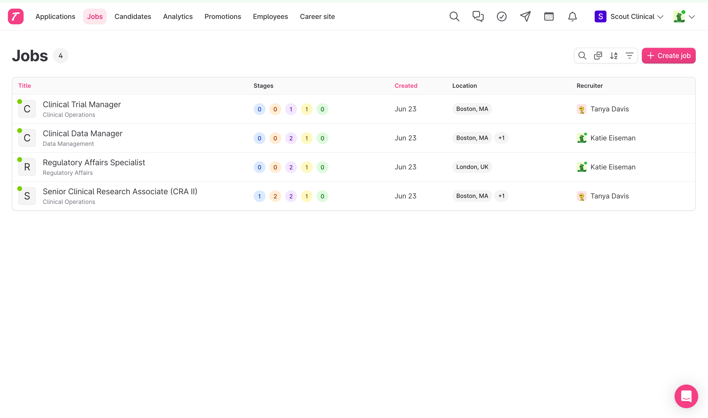

AI-Powered Applicant Tracking & Employer Brand Platform
Scout Clinical is a growing clinical research organization with teams in the United States, United Kingdom, and Ireland. The recruiting team is small, and they need an ATS that cuts out the manual work, handles global compliance, and uses AI so a lean team can operate efficiently at scale.
Right now, the current process is getting in the way. The offer process lives entirely outside the ATS. There's no real talent pool. And with no outbound sourcing engine, Scout's ability to find passive candidates — the ones Tanya says are the best — is limited to manual effort.
The current ATS's branded logo on offer emails forced Scout to move the entire offer workflow — document creation, e-signature, delivery — outside the system.
Every new req starts from scratch. Good candidates from past searches are buried in email folders and ATS statuses — there's no way to search them or match them to new roles.
"I'm a firm believer that the best candidates aren't looking for jobs. We want to try and find them." — Tanya Davis. Scout needs a sourcing engine that attracts and nurtures passive candidates, not just a cold database of names.
Teamtailor covers everything Scout asked for — branded offers, global compliance, ADP integration, AI screening, LinkedIn Recruiter Lite integration, and a career site that actually represents Scout's brand — at a flat, predictable price. The other platform's AI agents go live July 16 — worth asking if any customers have used them in production yet, and whether there's a cap on usage-based pricing.
The Hidden Cost of Your Current Workflow
The current ATS's offer emails display the vendor's logo prominently instead of Scout's branding. This forced the team to abandon the ATS's offer workflow entirely — creating documents manually, sending through DocuSign separately, and losing all tracking within the system.
"When we send it out to candidates, the email has a huge logo front center that isn't ours. We want it to be branded for Scout."— Katie Eiseman, Scout Clinical
Strong candidates who aren't hired are tracked through email folders and ATS statuses. There's no searchable talent pool, no AI matching against new roles, and no way to nurture passive candidates over time. Every new requisition starts from scratch.
"I'm a firm believer that the best candidates aren't looking for jobs. So we want to try and find them."— Tanya Davis, Scout Clinical
Coding challenges are done by hand. External recruiter submissions are copy/paste. Interview notes live in Google Docs. Rejection emails hit the ATS's sending cap. And when hiring picks up at the start of the year, the team's size becomes the bottleneck.
"Needing a little bit more robust of a system to kind of help us be more automated — letting the system work for us. That's kind of the time to start looking at new ATSs."— Katie Eiseman, Scout Clinical
The status quo isn't free — it's just harder to see on the invoice
Your current ATS's monthly fee looks small. But the real cost is the time your team spends working around its limitations. Based on what your team described across our conversations, here's a conservative estimate of what those workarounds cost per year.
Katie: "The email has a huge logo front center that isn't ours." 100% of offers processed outside the ATS.
Your team described copy/pasting resumes into ChatGPT. At 50 applicants/role, that's ~4 hours per open req.
Every new req starts from zero. Good candidates from past searches aren't searchable or matched.
Your team knows the real numbers. We've used conservative estimates — multiply by your actual hiring volume. That's time not spent sourcing, interviewing, or closing candidates — in an industry where open clinical research roles directly delay trial timelines.
Every requirement Scout discussed — mapped to Teamtailor
Over four conversations, Scout's team outlined a detailed set of requirements. Here's how Teamtailor addresses each one with features live in production today.


ClearCompany AI Agent Platform vs Teamtailor Copilot
ClearCompany announced 5 AI agents at SHRM on June 16. GA starts July 16 — no production customers yet.
Of those 5, two are for performance management (not ATS). The remaining 3 map to capabilities Teamtailor Copilot already ships today — JD generation, candidate suggestions, screening, scoring, interview transcription. Copilot is live with 10,000+ customers.
Scores from verified user reviews on G2
| Category | Teamtailor | ClearCompany | Why This Matters for Scout |
|---|---|---|---|
| Ease of Use | 9.0/10 | 9.1/10 | Statistical parity — both score high. The real test is daily workflow speed for a 2-person team. |
| Ease of Setup | 8.8/10 | 8.5/10 | A 2-person team can't afford a long implementation. TT's 4-week onboarding reflects this. |
| Ease of Admin | 9.0/10 | 8.8/10 | Katie manages this without IT support. Admin simplicity = fewer support tickets. |
| Quality of Support | 9.3/10 | 9.1/10 | When your team is 2 people, responsive support isn't optional — it's infrastructure. |
| Product Direction | 9.1/10 | 8.6/10 | Users trust where TT is headed. Rapid iteration on 6-week sprint cycles. |
| Meets Requirements | 8.7/10 | 8.8/10 | Near parity — CC's score reflects its broader suite (performance mgmt, engagement) beyond core ATS. |
Scores reflect G2 mid-market ATS category data as of Q2 2026. Both platforms are well-reviewed. The differences show up in the categories that matter most for a small, fast-moving team: setup speed, admin simplicity, and product innovation pace. Verify on G2 →
Launched October 2023. Iterating on 6-week sprint cycles, shaped by feedback from 10,000+ customers across 90+ countries. Every feature below is live and used in real hiring workflows today.
Announced at SHRM on June 16, 2026. GA scheduled for July 16. Per their press release, the agents are not yet in production — worth asking if any customers have used them in live hiring.
| Capability | ClearCompany | Teamtailor |
|---|---|---|
| AI Candidate Screening & Ranking Auto-evaluate applicants against role criteria |
AI Talent Match Aggregate skills/fit ranking score ✅ Live |
Copilot Candidate Screening ✓/✗ per criterion with reasoning ✅ Live · per-criterion transparency |
| Resume Parsing & Summaries Auto-extract skills, experience, education |
AI Talent Match (skills parsing) ✅ Live |
Copilot Resume Summaries Auto-generated on every candidate card ✅ Live |
| AI Job Descriptions Generate full JDs from title + requirements |
Req Agent Pre-GA · July 16 |
Copilot JD Drafts + bias detection via Develop Diverse ✅ Live |
| Interview Prep & Scorecards AI-generated questions + scoring rubrics |
Interview Agent Pre-GA · July 16 |
Copilot Interview Kit Auto-populates answers from transcript ✅ Live |
| Meeting Recording & Transcription Record interviews, transcribe, summarize |
AI Notetaker Recording + transcription + summaries ✅ Live |
Copilot Meeting Insights + auto-fills scorecard from transcript ✅ Live |
| Ask AI About a Candidate Natural language queries on a per-candidate basis |
Not in current product docs Ask if they have a natural-language query tool Not found |
Ask Copilot (per candidate) Query their resume, notes, transcripts, messages ✅ Live |
| Bias & Discrimination Detection Flag exclusionary language in JDs/comms |
Structured hiring emphasis "Bias interruptor" positioning in marketing Indirect — via structured process |
Via Develop Diverse integration Scans JD text for biased language + Anonymous Hiring mode hides names, photos, demographics ✅ Via integration + native anonymous mode |
| Multi-Language Translations Translate JDs, emails, career content |
Not mentioned in product docs Ask about multi-language support Not found |
Copilot Translations One-click translate any content ✅ Live — critical for UK/Ireland |
| Candidate Nurture & CRM Talent pools, drip campaigns, re-engagement |
Talent pools + email drip campaigns Two-way SMS messaging ✅ Live |
Nurture + Connect + Pools + SMS Auto-suggest from pools when roles open Two-way SMS messaging included ✅ Live |
| Career Site & Employer Branding Branded career page with culture content |
Responsive branded career pages Customizable components ✅ Live |
Full drag-and-drop builder Team pages, blog, custom sections, agent-ready ✅ Live — significantly more flexible |
| External Candidate Database Source passive candidates from public data |
800M profiles (aggregated public data) Per-credit access · 150 credits/package ✅ Live — credit-based |
Via Gem, Juicebox, hireEZ, SeekOut integrations Same data pools · your choice of tool · plus LinkedIn RSC two-way sync and Connect for passive candidate capture ✅ Via integration — best-of-breed sourcing tools |
| AI Interview & Screening Automated voice/video screening of candidates |
Sourcing Agent ("AI-led screening") Pre-GA · July 16 |
Native meeting recording + AI transcription & summaries AI voice screening via VoiceHire, Outhire (auto-triggered from pipeline) ✅ Meetings live · Screening via integration |
| Internal Candidate Search AI search within your existing applicant database |
Ask if their new agents include talent pool search Ask for demo |
Copilot Candidate Suggestions AI matches talent pool to new jobs ✅ Live |
| Open AI / Integration Ecosystem Connect external AI tools and agents |
Proprietary Agent Studio Ask about third-party AI tool support Pre-GA · July 16 |
Open REST API + community MCP integrations available Connect Claude, ChatGPT, or any AI tool to your ATS data ✅ API live · MCP integrations available |
Every feature listed above is live in Teamtailor today. Here's exactly how your team would use each one — plain and simple.

Paraphrased quotes from a ClearCompany customer (Q4 2025), plus common themes from recent G2 and Capterra reviews. We're not editorializing — just pairing each experience with how Teamtailor handles the same workflow.
"It returns a thousand or two thousand candidates from external sources. It provides me with a match bar — 'this candidate looks like it's a 90% match.' I dig into it and the candidate doesn't have a clearance, and neither does the next one, or the next one. So what criteria are you using to give me a 90% match?"
Copilot Candidate Screening lets you define your own criteria — "Must hold specific certification," "3+ years clinical trial experience" — and evaluates each applicant against those specific requirements. You see a ✓ or ✗ per criterion with the reasoning, not just a percentage. If a candidate doesn't meet a requirement, you know exactly which one and why.
"We're using ChatGPT and Gemini to help us review candidate resumes to see if they align to the position descriptions... AI is bad with ClearCo. That's probably my primary complaint."
This is the workflow Copilot replaces. Instead of copy/pasting resumes into ChatGPT, Copilot reads every resume automatically, summarizes it on the candidate card, and screens against your criteria — all inside the ATS.
"Just doing anything in ClearCo is difficult. It's not intuitive. Customizing anything is a process. You need to battle your way through it."
Teamtailor is consistently top-rated for ease of use on G2. Candidates are moved between stages with a drag. Job templates save your settings so you don't rebuild from scratch. The career site is drag-and-drop.
"Getting support when something breaks can be frustrating. Sometimes it takes multiple follow-ups to get a resolution, and you're left working around the issue in the meantime."
Teamtailor assigns a dedicated Customer Success Manager for implementation and onboarding — not a ticket queue. Your CSM knows your account, your setup, and your team. Scout would have a named person to call during setup and beyond. Training sessions are included in the price, and support is available via live chat, phone, and email.
"Getting certain integrations to work reliably can take extra effort. Sometimes you need manual workarounds to keep data flowing between systems."
Scout needs ADP, TestGorilla, and DocuSign working reliably from day one.The ADP, TestGorilla, and DocuSign integrations are all pre-built and maintained by Teamtailor. Teams/Outlook calendar sync is native. These aren't third-party connectors you hope work; they're part of the product.
Sources: Paraphrased from conversation with a current ClearCompany customer; common themes from G2 and Capterra verified reviews, 2025–2026.
"Features like AI resume summaries and video questions are leaned on heavily and regularly. Automated triggers are a real workhorse for the platform."
— G2 Verified Review
"The career site builder uses a drag-and-drop system that's genuinely intuitive, which is rare in HR software. You can quickly launch a branded page and connect it to your jobs pipeline without much friction."
— G2 Verified Review
"By using automated triggers we can let the system do a lot of work without us having to administer it. It has saved us huge amounts of administration time."
— Capterra Verified Review
"Teamtailor won't stop until they've helped me solve my challenge, and they do it with personalized conversations and customized links and screenshots."
— G2 Verified Review
What it costs — and why the total cost of ownership matters
With Teamtailor, you know what you're paying. AI, integrations, career site, unlimited seats — it's all in the price. No usage-based surprises when it's time to renew.
Based on the manual workflows Katie and Tanya described. Conservative numbers — your team can adjust based on actual hiring volume.
At 75 hires/year, savings reach $10,900 — nearly the full investment. And this doesn't include the value of filling a clinical research role 2 weeks faster, the cost of a delayed trial because a CRA position sat open, or the impact of a career site that actually represents Scout's brand. Those are the bigger numbers — and they're yours to calculate.
Direct responses to what Tanya and Katie raised across our conversations
"I'm leaning pretty heavily toward ClearCompany. One, because I've used them before and they've made some upgrades that I'm pretty excited about."
Familiarity is real, and we respect it. We'd just suggest asking a few questions: Can they connect you with a customer who's used the new AI agents in production? What do current customers say about the sourcing match quality? The upgrades you saw at SHRM go live July 16 — it's worth hearing from someone who's actually used them before committing.
"The biggest piece is they have a sourcing agent. It's going out there and pulling in candidates from all over the web and highlighting the best picks. That was pretty like, oh geez, that's really amazing."
The sourcing agent sounds impressive — but the underlying data is the same public dataset (LinkedIn profiles, company sites, public records) that powers Gem, Juicebox, hireEZ, and SeekOut. ClearCompany's existing sourcing tool already uses this data, and their own customers report it returns candidates with 90% match scores who don't meet basic clearance requirements. Teamtailor integrates with any of these sourcing tools via open API — you choose the best one, not just the one bundled in.
"We've done this before — they said they'd have it next quarter. We ended up going with the other platform and I followed up a few times. It's been almost a year later now."
Every AI feature in this document is live in production today with 10,000+ customers. We ship on 6-week sprint cycles. ClearCompany's agents launch July 16 with no announced production customers yet. It's worth asking them how long their agents have been tested and whether any customer has used them in a live hiring workflow.
"Cost is up there. We're having to try to stay more on the conservative side and don't really have a wide range we can play with."
$11,500/year, everything included. No per-agent fees. No usage-based consumption pricing. No sourcing credit packages. No per-seat charges for hiring managers. Ask ClearCompany for their guaranteed renewal terms including agent usage — if they can match that pricing predictability, great. If not, that's worth knowing.
"If we're able to go to our CFO with our business case of why this system at this cost makes the most sense and know we've done our due diligence, they'll probably be pretty okay with it."
That's exactly what this document is designed to do. Share it as-is — it includes competitive analysis, pricing comparison, feature mapping, and an implementation timeline. If the CFO has questions, we're available to join a call and walk through any section directly.
"For me, I have reservations on the manipulation of the system — how much we can actually customize it. Other systems we're looking at seem to be highly customizable."
Everything Katie asked about in the demo — custom stages, smart move triggers, location-based knockout questions, region-specific application flows, recruiter-specific email overrides, multi-currency offer letters — is already built and configurable. The semi-monthly salary display Tanya flagged? Available via custom fields on offer letters. The career site is fully drag-and-drop. ClearCompany's own customers say "customizing anything is a process — you need to battle your way through it."
"I've had it where you sign on with a vendor and as you get into the nuts and bolts, you're like, well, I said I wanted to do this and you really can't, or it becomes much more complicated."
This is a fair concern — and exactly why we prioritized showing live product across our conversations instead of just presenting slides. Offer approval workflows, semi-monthly salary display, DocuSign integration, EEO routing by location, external recruiter portals, state-based knockout questions — all demonstrated in your Teamtailor instance.
"Is the e-signature legally sufficient? We'd need to go to our legal team to see if Teamtailor's format suffices, or if we still need DocuSign."
Teamtailor has a built-in e-signature that works for standard offer acceptance. Your legal team can review it, and DocuSign is also available as an integration if they need a more formal signature standard. With DocuSign, the candidate receives an email to e-sign the document — they don't sign inside Teamtailor directly. Tanya mentioned comp agreements that need separate signing — DocuSign handles those as part of the offer workflow.
"If we're gonna increase our budget, I want it to be really good, you know."
This isn't marginally better than your current ATS — it's a completely different category. AI screening that replaces your ChatGPT copy/paste workflow. Offers under your own brand. A career site that makes non-clinical candidates want to apply to Scout. Job boards like Indeed, LinkedIn, ZipRecruiter, and Monster included automatically vs. paying per-post. This is what "really good" looks like at $11.5K/year.
"The thing that was edging you out was the global job posting." / "If we post a single job with locations in both the US and international, are we able to list salaries based on each location?"
This is a job board limitation, not an ATS limitation — it applies across all platforms, including ClearCompany. For a single posting, only one salary range can be displayed on external boards. The workaround: either (a) include location-specific salary ranges within the job description body, or (b) create separate postings per location when pay transparency requirements differ. The difference between the two platforms shows up everywhere else: AI that works today, pricing you can budget for, and a system that doesn't lock you into one vendor's tools.
"Does the system include consent questions by location? For example, we ask the disability/EEOC questions for US positions but not for Global positions — can they be selected/un-selected per job?"
Yes. EEOC/disability questions are managed through Teamtailor's Surveys feature — you create an EEO survey (predefined US and UK templates are included), then attach it to specific jobs or job templates. US roles get the EEOC survey; international roles don't. For a single posting spanning multiple locations, you'd use separate job templates per region, each with the appropriate survey attached. Surveys can be marked Confidential so responses are kept separate from the hiring process. You can also use conditional logic to show/hide follow-up questions based on a candidate's answers.
"Does the system set data retention rules by location/country and automatically remove candidate info based on those rules?"
Yes — Teamtailor supports per-country data retention policies. Under Settings → Data & Privacy, you set a global default policy, then add local policies for specific countries (e.g., UK candidates get a different retention period than US candidates). Each local policy has its own validation time and automatic renewal/deletion rules. If a candidate is in a country without a local policy, the global default applies. Consent collection uses mandatory checkboxes on the application form, configurable per-region. Candidate data deletion requests are handled natively within the system.
Based on everything discussed across our conversations, here's why Teamtailor is the right fit for Scout specifically.
The surface-level question is "which ATS?" But the actual problem is bigger than any one tool.
Scout is a clinical trial services company with 30 years of experience in life sciences, operating across 100+ countries. Headquartered in Dallas with a London office and ~220 mostly-remote employees, Scout supports clinical research through patient logistics, travel, payments, meeting planning, and training — all under one people-first brand that's highly regarded in the industry. But Tanya built HR from scratch here, and your current recruiting stack wasn't built for the speed and scale your business needs today.
The question isn't "which vendor checks more feature boxes?" It's: which platform gives your small team the infrastructure to hire at the speed clinical research demands — without adding headcount?
Every AI feature is live today with 10,000+ customers. Global hiring is native. Career site, nurture campaigns, and sourcing ecosystem are all included. $11,500/year, flat.
AI agents launch July 16 with no announced production customers. Consumption-based pricing with no stated ceiling. Ask: can any customer confirm they've used these agents in a live hiring workflow?
The career site is what candidates see. Here's what Tanya and Katie see every day — a clean, modern admin interface that puts everything in one place.


ClearCompany is building a closed system — you set up agents inside their platform, using their data, their way. Teamtailor takes the opposite approach: a fully open REST API with community-built MCP integrations already available — meaning you can work with Teamtailor data directly from Claude, ChatGPT, or whatever AI tool comes next.
$11,500/year. Everything included. No per-agent fees, no usage tiers, no surprise add-ons when it's time to renew. Ask ClearCompany whether their agent pricing is flat or usage-based, and whether there's a cap.
Tanya, Katie — thank you for the time you've invested across these conversations. We know switching systems isn't a small decision, especially when you're building HR infrastructure from the ground up. Whatever you decide, we appreciate the honesty and thoroughness you've brought to this evaluation. Here's where we'd suggest going from here.
Understood Scout's requirements, current process pain points, and evaluation criteria
✓ CompleteWalked through offers, ADP integration, AI screening, global posting, and career site
✓ CompleteThis document — share with your CFO for budget approval
★ You Are HereReview requirements spreadsheet together, address open questions on e-signature and compliance
UpcomingWe're available to join a call with the CFO to walk through pricing and competitive positioning
Upcoming4-week dedicated onboarding — career site, ADP sync, AI screening, team training
UpcomingAvailable to join a call with your CFO to walk through any section of this document.
💬 Comments